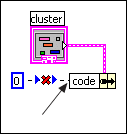

A node on the block diagram has a terminal that is incorrectly wired, or a required input is not wired.
In the following example, the y input of the Add function is not wired. You must wire both inputs for the Add function.

To correct this error, you must wire all required inputs.
In the following example, the Bundle by Name function has been set to the name code, but the cluster does not contain any items named code.
To correct this error in the case of this example, change the name in the Bundle by Name node to match the name of any item in the cluster. In the case of a bad terminal, each node has different requirements for how to fix the error, which you can typically determine from the context of the terminal. In some cases, the Error list window displays additional errors that can help you to determine what to fix. To see the connections for a node, display the Context Help window and move the cursor over the node.